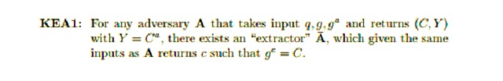
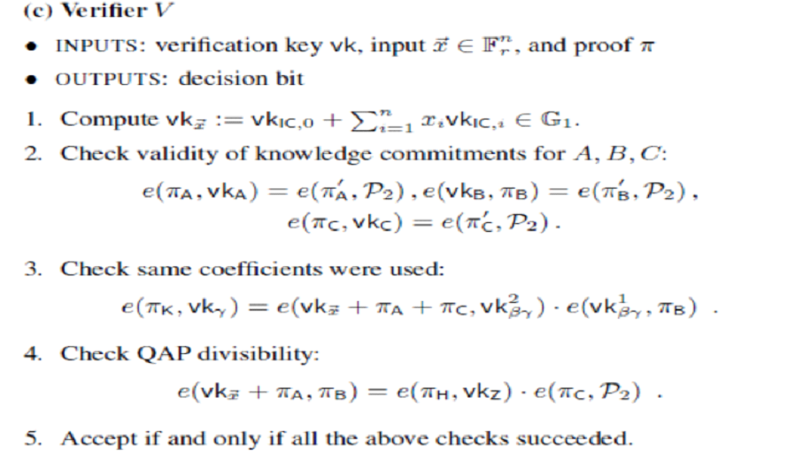

最新以太坊｜零知识证明专题系列报告（四）： 算法迷踪
作者：Vitalik Buterin
9 / 3 / 2017
本文是阐述zk-SNARKs技术原理的系列文章的第三部分。前两部分的文章分别阐述了二次算术程序（quadratic arithmetic program，QAP）以及椭圆曲线配对的运作原理，也是本文的基础。本文假定读者对上述概念以及zk-SNARK的定义、功能已经有所了解。你也可以点击此处阅读ChristianReitwiessner另外一篇关于技术介绍的文章。
在前面的文章中，我们介绍了二次算术程序——一种使用多项式方程来表示任意计算问题的方法——它能更加有效地应对形形色色的数学诡计。此外，我们还介绍了椭圆曲线配对。该方法允许你使用单向同态加密（尽管形式非常有限）来检查所需值是否相等。现在，我们接着上次的内容，并结合椭圆曲线配对以及其它的一些数学技巧来继续讲述如何在不揭露真实解的相关信息的情况下，让证明者证明它们知道特定QAP的解。
本文将重点介绍Parno，Gentry，Howell和Raykova四人在2013年（通常简称为PGHR13）提出的匹诺曹协议（Pinocchio protocol）。由于我们对原来的基本机制进行了部分修改，因此实际中zk-SNARK方案的运作方式会稍有不同，但是两者的基本原理大体上还是一致的。
首先，让我们讨论一个关键的密码学假设，它是我们所要使用的这套机制的安全性的基础。我们称之为指数知识假设（knowledge-of-exponent assumption，KEA）。
一般而言，如果你得到点P和Q，其中P * k = Q，与此同时你还得到一个点C。那么，除非你知道C是以某种方式从P“导出”的，否则你不可能想到C * k。这看起来似乎显而易见。但是实际上，这个假设并不能从我们在证明基于椭圆曲线的协议的安全性时通常使用的那些假设里（比如，离散对数难题）推出。因此，概括而言，zk-SNARK所依靠的技术基础在某种程度上其实并没有椭圆曲线加密系统所依靠的那么坚实——但它还是很牢固的，也得到了大部分密码学家的认可。
KEA1：对任意A，如果其输入q,g,gα后返回值（C,Y），其中Y=Cα。那么存 在一个“抽取字”，在输入与A相同的前提下，会返回值c，并满足gc= C。
现在，让我们来看看该如何使用它。假设有一对点（P，Q）从天而降，其中，P * k = Q——但没有人知道k的值。现在，假设我想出了一对点（R，S），其中R * k = S。然后，根据KoE假设，我唯一可以做的就是取P和Q，并将它们与我个人知道的某个因子r相乘。还要注意，得益于椭圆曲线配对的魔力，检查R = k * S实际上不需要知道k。相反，你只要简单地验证e（R，Q）与e（P，S）是否相等就可以了。
让我们做一些更加有趣的事情。假设有十对点从天而降，它们分别是：（P_1，Q_1），（P_2，Q_2）...（P_10，Q_10）。对于每一对点，它们都满足条件P_i * k = Q_i。假设我给你一个点（R，S），其中R * k = S。你现在知道什么？你知道R是一个线性组合即P_1 * i_1 + P_2 * i_2 + ... + P_10* i_10，而我知道系数i_1，i_2 ... i_10是什么。也就是说，得到（R，S）这一对点的唯一方法就是取P_1，P_2 ... P_10的特定倍数并把它们相加，并对Q_1，Q_2 ... Q_10也进行相同的运算。
注意，对于任何特定的点P_1... P_10的集合，你可能想要检查它们的线性组合，但事实上你不可能在不知道k是什么的情况下，创造出相伴的Q_1 ... Q_10点。如果你知道k是什么，那么你可以根据任何你想要的R去创建一对点（R，S）（其中，R * k = S），而不用操心去创建一个线性组合。因此，为了实现这个目的，我们必须要保证所有创造这些点的人都是可信赖的，并且一旦他们创造完这十个点就会删除k。这就是“信任设置”概念的由来。
记住，QAP的解是一组多项式（A，B，C），并满足A（x）* B（x）-C（x）= H（x）* Z（x），其中：
A是一组多项式{A_1 ... A_m}的线性组合
B是具有相同系数的{B_1 ... B_m}线性组合
C是具有相同系数的{C_1 ... C_m}线性组合
集合{A_1 ... A_m}，{B_1 ... B_m}和{C_1 ... C_m}以及多项式Z都是问题陈述的一部分。
然而，在大多数现实情况下，A，B和C都非常大。对于诸如哈希函数这样具有成千上万个电路门的东西，多项式（以及线性组合中的因子）可以具有数千个项。因此，相比让证明者直接提供线性组合，我们更倾向于使用前面介绍的技巧来让证明者证明他们提供的东西（这东西是一个线性组合），而无需揭露其它信息。
你可能已经注意到，上述技巧是基于椭圆曲线点而不是基于多项式的。因此，在实际应用中，我们将以下值添加到信任设置中：
G * A_1（t），G * A_1（t）* k_a
G * A_2（t），G * A_2（t）* k_a
...
G * B_1（t），G * B_1（t）* k_b
G * B_2（t），G * B_2（t）* k_b
...
G * C_1（t），G * C_1（t）* k_c
G * C_2（t），G * C_2（t）* k_c
...
你可以将t看作是评估多项式的“秘密点”。G是一个“生成点”（一些随机的椭圆曲线上的点被指定为协议的一部分），并且t，k_a，k_b和k_c都是“有毒废物”，是不惜一切代价都必须要删掉的数字。否则，这些数字一旦被他人获取，那个人将能够伪造证明。现在，如果有人给你一对点P，Q并满足P * k_a = Q（提醒：我们不需要用k_a来进行检查，因为我们可以做一个配对检查），那么你就知道他们给你的是在t点评估的A_i的多项式的线性组合。
因此，到目前为止，证明者必须给出：
π_a= G * A（t），π'_a= G* A（t）* k_a
π_b= G * B（t），π'_b= G* B（t）* k_b
π_c= G * C（t），π'_c= G* C（t）* k_c
注意，证明者实际上并不需要知道（并且不应该知道！）t，k_a，k_b或k_c来计算这些值。相反，证明者应该能够只根据我们添加到信任设置中的点来计算这些值。
下一步是确保这三个线性组合都具有相同的系数。这个可以通过向信任设置添加另外一组值来完成：G *（A_i（t）+ B_i（t）+ C_i（t））* b，其中b是另一个应该被视为“有毒废物”的数字，并在信任设置完成后立即被丢弃。然后，我们可以让证明者根据这些值以及相同的系数来创建一个线性组合，并利用与上述相同的配对技巧来验证该值与所提供的A + B + C匹配。
最后，我们需要证明A * B - C = H * Z。我们再次利用配对检查来完成这项工作：
e（π_a，π_b）/ e（π_c，G）θ= e（π_h，G * Z（t））
其中，π_h= G * H（t）。如果你依然没搞懂这个方程和A * B - C = H * Z之间的联系，我们建议你回去阅读关于配对的文章。
经过上述例子，我们看到如何将A，B和C转换成椭圆曲线点； G只是一个生成点（即等同于数字1的椭圆曲线点）。我们可以将G * Z（t）添加到信任设置中。H更难，它是一个多项式。对于每一个QAP解，我们都会稍微提前一点来预测H的系数会是什么。因此，我们需要向信任设置添加更多的数据;其具体为如下序列：
G，G * t，G * t 2，G * t3，G * t 4 ...。
在Zcash信任设置中，这个序列长达约200万个数值。为了确保你一定（至少在他们关心的特定的QAP实例中）能够计算H（t），这就是你所需要的t的幂次。有了这个，证明者就可以向验证者提供所有的信息以进行最终检查。
还有一个细节我们需要讨论。大多数时候，我们不想只是抽象地证明某个特定问题的解的存在。比如说，我们想要证明某个特解的正确性（例如，证明如果你把单词“cow”用SHA3做一百万次哈希运算以后，最终结果的开头是0x73064fe5），又或者证明你在限制一些参数以后，依然存在解。例如，在加密货币的应用中，交易金额和帐户余额会被加密，你想要证明你知道某个解密密钥k，满足：
1.decrypt（old_balance，k）≥decrypt（tx_value，k）
2.decrypt（old_balance，k） -decrypt（tx_value，k）= decrypt（new_balance，k）
加密的old_balance，tx_value和new_balance应该被公开说明，因为它们是我们要在该特定时间内验证的特定值。只有解密密钥应该被隐藏。为了创建与输入中某些特定限制相对应的“自定义验证密钥”，我们需要对协议进行一些轻微的修改。
现在，我们稍微回顾一下。首先，这里是整个验证算法，它由ben Sasson，Tromer，Virza和Chiesa提供：
第一行与参数化有关。本质上，你可以认为它的功能是为特定的问题实例（某些参数被指定）创建一把“自定义验证密钥”。第二行是A，B和C的线性组合检查；第三行是检查线性组合具有相同的系数；第四行是乘积检验，检查A * B-C是否与H * Z相等。
总之，验证过程就是几个椭圆曲线乘法（分别对每个“公共”输入变量使用）以及五个配对检查，其中，这些配对检查包含有额外的配对乘法运算。该证明包含了八个椭圆曲线点，它们分别是：由A（t），B（t）和C（t）组合得到的三对点；满足b *（A（t）+ B（t）+ C（t）的点π_k以及满足H（t）的点π_h。在这些点中，有七个点在F_p曲线上（每个点大小为32字节，因为你可以将y坐标压缩为1个比特）。在Zcash的实际应用中，有一个点（π_b）在满足F_p²（该域内每个点大小为64字节）的扭曲曲线上，因此证明的大小约为288字节。
要创建证明，计算难度最高的两个部分是：
通过分解（A *B - C）/ Z来得到H（基于快速傅里叶变换的算法可以在次二次时间内完成这项运算，但仍然需要高度密集的计算）。
通过椭圆曲线乘法和加法运算来创建值A（t），B（t），C（t）和H（t）及它们对应的对。
创建证明之所以如此困难，最基本的原因是如果我们要进行零知识证明，那么原始计算中的单个二进制逻辑门就变成了必须通过椭圆曲线操作加密处理的操作。这个事实，再加上快速傅里叶变换的超线性，意味着每一笔Zcash交易需要耗费约20-40秒来进行证明创建。
另一个非常重要的问题是，我们可不可以尝试让信任设置对信任的要求稍微降低一些？不幸的是，我们不能让它完全不信任。KoE假设本身排除了在不知道k是什么的情况下产生独立对（P_i，P_i * k）的可能性。然而，我们可以通过使用N-N多方计算来大大增加安全性 ——也就是说，在N方之间构建信任设置。只要至少有一个参与方删除了它们的有毒垃圾，那么就没有问题了。
为了让你能稍微体会到这一点是如何做到的，这里有一个简单的算法：我们取一个现有的集合（G，G * t，G *t²，G *t³...）并“添加”自己的秘密，这时你需要对你的秘密和以前的秘密（或以前的秘密的集合）进行伪装。
输出集合很简单：
G，（G * t）* s，（G * t 2）* s 2，（G * t3）* s 3 ...
注意，即使你只知道原始集合和s，你也可以产生这个集合，并且新集合以与旧集合相同的方式发挥作用——除了现在我们使用t*s而不是t作为“有毒废物”。只要你和创造了前一集合的人（或人们）不同时没有删除你的有毒废物，并且在这之后勾结串通，那么这个集合就是“安全的”。
在完全信任的信任设置中，这么做有点困难。因为这涉及到多个值，并且算法必须在各方之间在数个回合内完成。这是一个积极的研究领域，我们可以尝试看是否可以进一步简化多方计算算法，并使其需要更少的轮次或支持更多的并行处理。因为你能做的工作越多，那么能进入到信任设置过程的参与者就越多。有人认为如果信任设置过程中的6位参与者之间相互认识且一起共事，可能会使一些人不舒服，这种想法很有道理。但是如果一个信任设置过程有成千上万的参与者参与进来，那么这个过程将与不信任过程别无二致。如果你实在不想这样，那么你可以自己一个人进入并参与设置过程，但你要保证亲自删掉自己的值。另一个积极的研究领域是在不使用配对以及相同的信任设置范例的前提下，用其它方法来实现相同的目标。请参见Eli ben Sasson最近一个关于此类替代方法的演示（虽然被警告了，但它的数学复杂度至少不会比SNARKs低！）
特别感谢Ariel Gabizon和Christian Reitwiessner的审阅。
原文来源： https://medium.com/@VitalikButerin/zk-snarks-under-the-hood-b33151a013f6